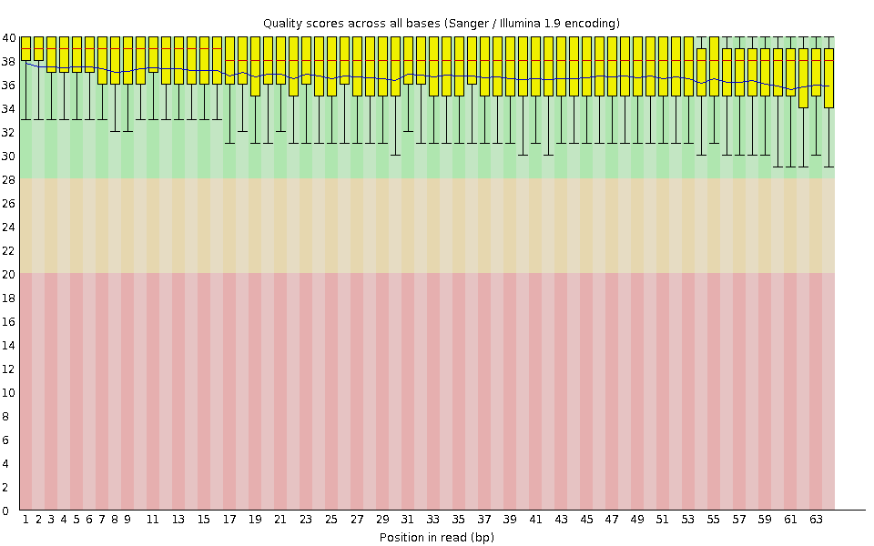
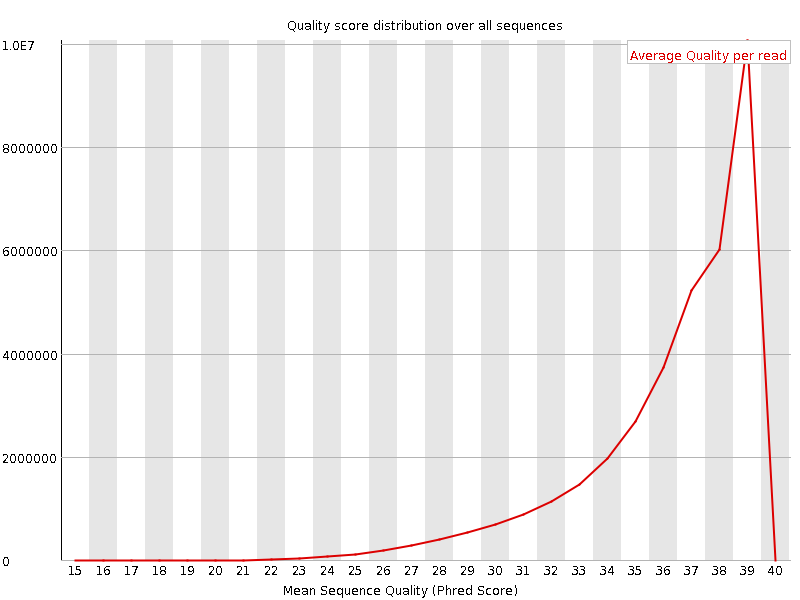
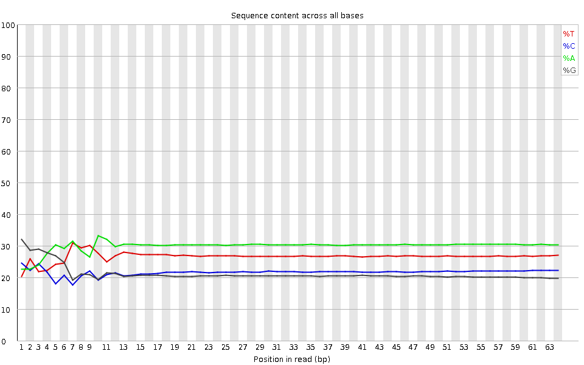
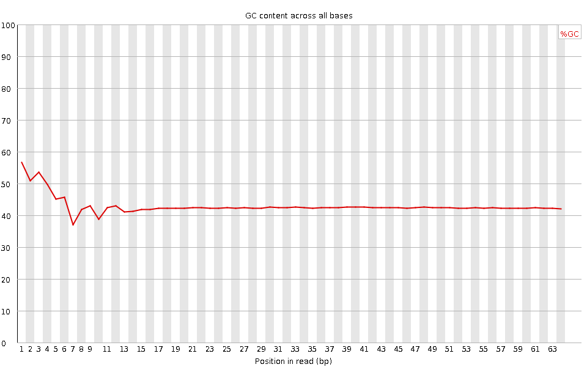
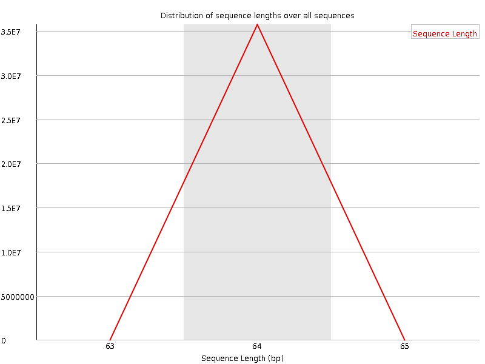
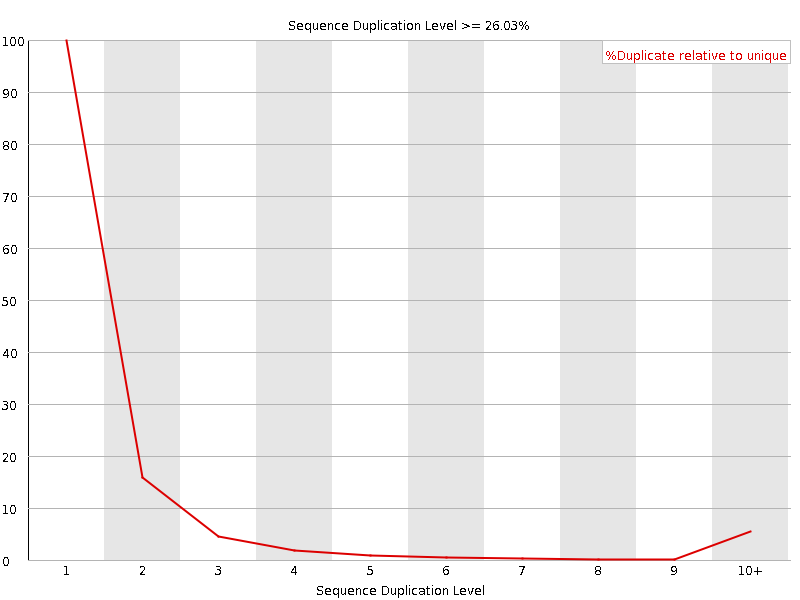
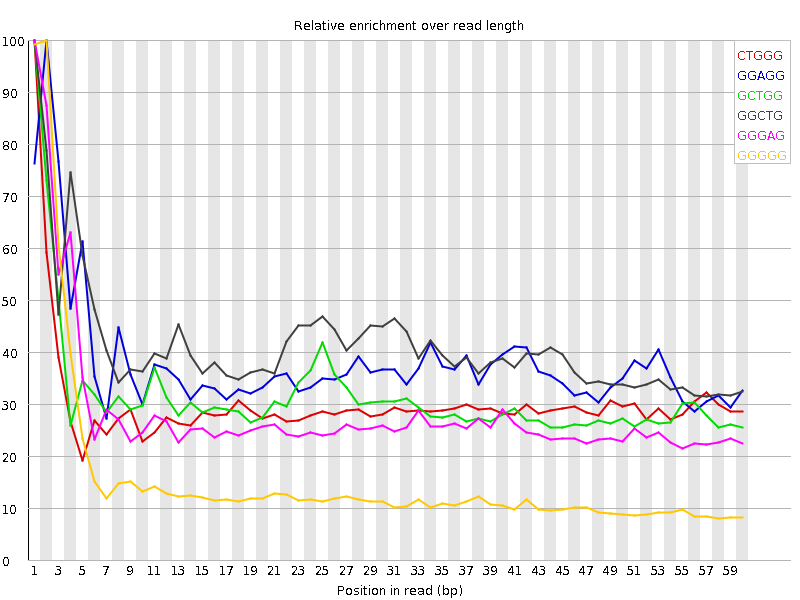

![[OK]](Icons/tick.png) Basic Statistics
Basic Statistics
| Measure | Value |
|---|---|
| Filename | SRR315309_pe_1.f.fastq |
| File type | Conventional base calls |
| Encoding | Sanger / Illumina 1.9 |
| Total Sequences | 35736783 |
| Filtered Sequences | 0 |
| Sequence length | 64 |
| %GC | 43 |
Per base sequence quality

Per sequence quality scores

![[WARN]](Icons/warning.png) Per base sequence content
Per base sequence content

![[FAIL]](Icons/error.png) Per base GC content
Per base GC content

Per sequence GC content

Per base N content

Sequence Length Distribution

Sequence Duplication Levels

Overrepresented sequences
No overrepresented sequences
Kmer Content

| Sequence | Count | Obs/Exp Overall | Obs/Exp Max | Max Obs/Exp Position |
|---|---|---|---|---|
| CTGGG | 3467645 | 2.8655534 | 9.506876 | 1 |
| GGAGG | 3739425 | 2.8178916 | 7.3745914 | 2 |
| GCTGG | 3076290 | 2.54215 | 8.064036 | 1 |
| GGCTG | 3068565 | 2.5357661 | 6.1533895 | 1 |
| GGGAG | 3304370 | 2.49005 | 8.746828 | 1 |
| GGGGG | 2086315 | 2.222094 | 14.253017 | 2 |
| GGCAG | 2974735 | 2.1887758 | 6.6163564 | 1 |
| GGGGA | 2769385 | 2.0869052 | 10.717696 | 1 |
| TGGGA | 3452990 | 2.0676281 | 5.086451 | 2 |
| TGGGG | 2419330 | 2.0475543 | 8.675993 | 1 |
| GGGAA | 3782235 | 2.01653 | 5.8225684 | 1 |
| GTGGG | 2306135 | 1.9517537 | 9.988399 | 1 |
| GGGCA | 2334370 | 1.7176025 | 5.9389167 | 1 |
| GGGTG | 1995290 | 1.688676 | 6.1352234 | 2 |
| GGGGT | 1940560 | 1.6423563 | 8.609725 | 3 |
| GGGGC | 1499755 | 1.5596836 | 7.1841397 | 2 |
| GGGCT | 1873210 | 1.5479622 | 5.749543 | 3 |
| CGGGG | 1145650 | 1.1914289 | 11.074938 | 1 |
| GGGTT | 1746080 | 1.1742543 | 5.1251225 | 3 |
| GGCGG | 935380 | 0.97275674 | 6.5408216 | 1 |
| GCGGG | 857610 | 0.89187914 | 6.740494 | 1 |